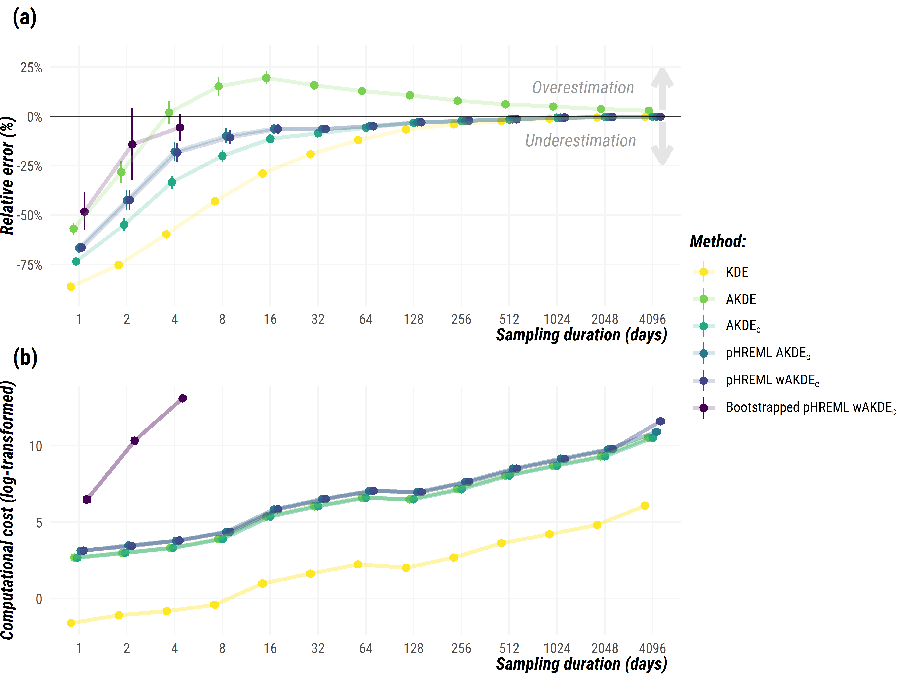

Autocorrelation-informed home range estimation:
a review and practical guide


About:
This repository is a companion piece to the manuscript “Autocorrelation-informed home range estimation: a review and practical guide”, published in Methods in Ecology and Evolution. Click here to download the full-text. Preprint is also available on EcoEvoRxiv.
Home range estimation is a key output from tracking datasets, but the inherent properties of animal movement can lead traditional methods to under- or overestimated their size. Autocorrelated Kernel Density Estimation (AKDE) methods were designed to be statistically efficient while explicitly dealing with the complexities and biases of modern movement data, such as autocorrelation, small sample sizes, and missing or irregularly sampled data.
Here, we provide:
- R tutorial as a GitHub page (or as a .pdf file).
- Simulation data and corresponding R script.
Citation:
Silva, I., Fleming, C. H., Noonan, M. J., Alston, J., Folta, C., Fagan, W. F., & Calabrese, J. M. (2022). Autocorrelation‐informed home range estimation: A review and practical guide. Methods in Ecology and Evolution, 13(3), 534-544. https://doi.org/10.1111/2041-210X.13786
R tutorial:
The AKDE family of home range estimators will be run using R software and the ctmm package (Calabrese et al., 2016). If you are not familiar with R, make sure you follow these steps:
- Install
Rfrom https://www.r-project.org. - Install
RStudio Desktopfrom here for a graphical interface forR. - Install the required
Rpackages with the following code:
install.packages("ctmm")We provide a guide to home range estimation using the following workflow:
- Step 1. – Formatting and loading an animal tracking dataset;
- Step 2. – Checking for the range residency assumption;
- Step 3. – Selecting the best-fit movement model through model selection;
- Step 4. – Feeding a movement model into the home range estimator;
- Step 5. – Evaluating additional biases, applying mitigation measures.
Click here for the tutorial as a GitHub page (or here as a .pdf file). The tutorial was generated with R version 4.2.3, and ctmm version 1.1.1.
Simulations:
To quantify the level of improvement offered by each mitigation measure and to explore the tradeoff between accuracy and computational cost, we performed a detailed simulation study. For more details, check our manuscript here.

Metadata
The :file_folder: data directory contains:
- :memo: data_sims.csv: Output from simulations.
method- home range estimator methodduration- sampling duration (in days)bias- difference between the 95% home range estimate and the true 95% areacost- computational cost (in seconds)relArea- Relative home range area (true home range area is scaled to 1)error- Relative error of home range areatau_p- position autocorrelation timescale (in sec)tau_v- velocity autocorrelation timescale (in sec)
- :memo: example_data_longlat.csv: Example dataset with coordinates as latitude/longitude.
- :memo: example_data_utm.csv: Example dataset with UTM coordinates.
Useful links:
- Coding Club: collection of coding tutorials with examples in R.
learnR package: interactive tutorials for R.
For further documentation on using the ctmm package: - https://cran.r-project.org/web/packages/ctmm/ctmm.pdf - https://ctmm-initiative.github.io/ctmm/